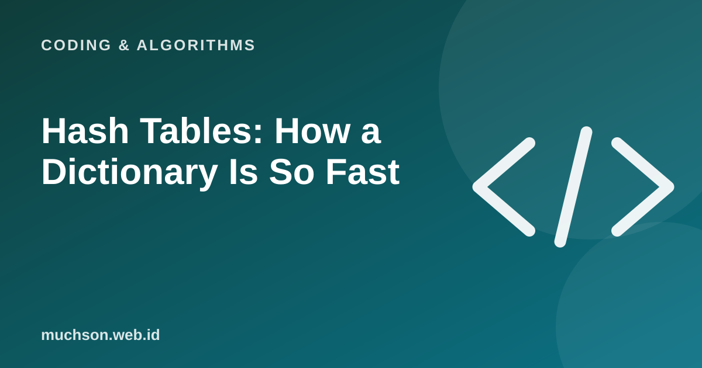

Home › Articles › Coding & Algorithms
Coding & AlgorithmsHash Tables: How a Dictionary Is So Fast
A Python dictionary, a JavaScript object and a database index use the same idea: turn a key into a drawer number, then open that drawer directly. There is no need to check one by one.

The basic idea
Text description of the diagram
- Key: for example the word "apple"
- Hash function: turns the key into a number
- Drawer number: the number mod the number of drawers
- Open the drawer: store or fetch the value
Collisions
Two different keys can produce the same drawer number. This is called a collision, and it cannot be avoided entirely. There are two common approaches: chaining (a drawer holds a list, as in the demo) and open addressing (look for the nearest empty drawer). A good hash table spreads keys evenly and grows the table when it starts to fill up.
In Python
prices = {"apple": 12000, "orange": 15000}
prices["mango"] = 20000 # store: O(1) on average
print(prices["orange"]) # look up: O(1) on average
print("banana" in prices) # check a key exists: FalseThe key rule
A dictionary key must be "hashable" and unchanging (for example a string, a number or a tuple). A list cannot be a key because its contents can change.
FAQ
Is a hash table always O(1)?
On average yes. In the worst case with many collisions it can become O(n), but modern implementations avoid that.
Is hashing the same as encryption?
No. A hash is for fast lookup or a data fingerprint. Encryption is for keeping data secret and can be reversed.
Is dictionary order guaranteed?
In Python 3.7 and later, insertion order is preserved. That is a property of the language, not a general property of hash tables.